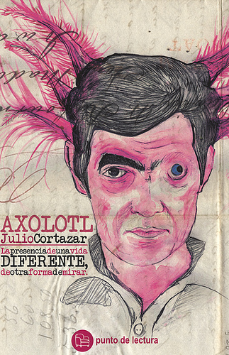

Axolotl
Maestro de obras como Rayuela pero también de una colección de cuentos para la posteridad, a Cortázar le gustaba jugar con la dualidad de esas pequeñas cosas, con los sueños en los que nunca se sabe quien es soñador o soñado. En el caso de Axolotl, una salamandra de origen mexicano a la que el autor va a visitar todos los días en el Jardin des Plantes de París, el escritor evoca una metáfora tan solitaria como impactante al más puro estilo de La noche bocarriba, otro de sus grandes relatos cortos.

Hubo un tiempo en que yo pensaba mucho en los axólotl. Iba a verlos al acuario del Jardin des Plantes y me quedaba horas mirándolos, observando su inmovilidad, sus oscuros movimientos. Ahora soy un axólotl.
El azar me llevó hacia ellos una mañana de primavera en que París abrió su cola de pavorreal después de la lenta invernada. Bajé por el bulevar de Port-Royal, tomé St. Marcel y L´Hospital, vi los verdes entre tanto gris y me acordé de los leones. Era amigo de los leones y las panteras, pero nunca había entrado en el húmedo y oscuro edificio de los acuarios. Dejé mi bicicleta contra las rejas y me fui a ver los tulipanes. Los leones estaban feos y tristes y mi pantera dormía. Opté por los acuarios, soslayé peces vulgares hasta dar inesperadamente con los axólotl. Me quedé una hora mirándolos y salí, incapaz de otra cosa